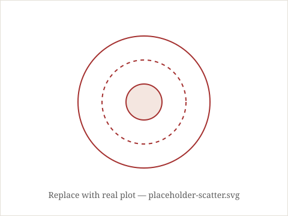
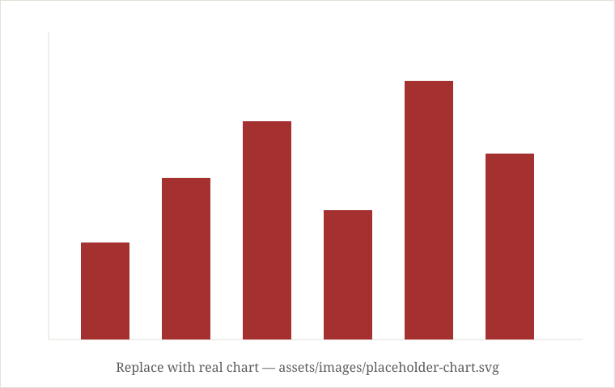

1 How It Works
Building the model
Every year, Danish football produces a handful of players who quietly outgrow the Superligaen and end up at clubs across Europe. Spotting them early is part scouting instinct, part data. This project leans on the data half: a model trained on historical player performance, physical attributes, and career trajectories to estimate which young players are most likely to break out next.

At a high level, the pipeline pulls match and season statistics for young players across the top two Danish divisions, engineers features around usage, efficiency, and progression (rather than raw totals, which favour players who simply play more minutes), and feeds them into a supervised model trained on past examples of players who did — and didn't — go on to have significant careers.
The target we predict isn't just "will this player get a big transfer." It's a broader breakout probability: the chance a player reaches a defined tier of performance and playing time within the next one to three seasons, benchmarked against historical players at the same age and position.
What goes into it
- Form & output — per-90 contributions, shot and chance quality, defensive actions, adjusted for role.
- Trajectory — season-over-season growth rather than a single snapshot.
- Context — minutes share, quality of teammates/opposition, and league level.
- Physical & biographical — age curve position, height/build where relevant to position.
The result is a ranked list, refreshed each season, rather than a single "yes/no" flag — because scouting is fundamentally a ranking problem, not a classification one.
2 The Predictions
Next season's talent list
Below is the current model output: the players the model rates most likely to break out over the upcoming seasons, ranked by predicted breakout probability. This table is meant to be swapped in from the model's live output each time it's re-run.
| Rank | Player | Club | Position | Age | Breakout Probability |
|---|---|---|---|---|---|
| 1 | Player A | Club A | CM | 18 | 87% |
| 2 | Player B | Club B | ST | 19 | 81% |
| 3 | Player C | Club C | RB | 20 | 76% |
| 4 | Player D | Club D | CB | 18 | 72% |
| 5 | Player E | Club E | LW | 19 | 69% |

Read this list as a ranking of upside, not certainty — a probability of 70% still means roughly three in ten similar players don't pan out. The value is in surfacing names worth watching sooner rather than later.
3 Under the Hood
The technicals
For readers who want the details: the model is a gradient-boosted ensemble trained on a historical panel of Danish youth and Superligaen players, validated with a time-based split so the model is always tested on seasons it hasn't seen.
Data & features
Season-level and per-90 statistics are pulled from match data, then aggregated into rolling features (last 1, 2, and 3 seasons) so the model can see whether a player is improving, plateauing, or declining, not just where they currently stand.
Model
A gradient-boosted tree ensemble (e.g. LightGBM/XGBoost) is used for its balance of accuracy and interpretability via feature importances and SHAP values. A simplified snippet of the training step:
from lightgbm import LGBMClassifier
from sklearn.model_selection import TimeSeriesSplit
model = LGBMClassifier(
n_estimators=400,
max_depth=5,
learning_rate=0.03,
subsample=0.8,
)
cv = TimeSeriesSplit(n_splits=5)
for train_idx, test_idx in cv.split(X):
model.fit(X.iloc[train_idx], y.iloc[train_idx])
preds = model.predict_proba(X.iloc[test_idx])[:, 1]
Validation
Because breakouts are rare events, we track precision at the top of the ranking (e.g. precision@20) alongside AUC, since a scout cares more about whether the top of the list is right than about overall classification accuracy.
The model doesn't replace scouting — it narrows the search, so human judgement is spent on the players most worth watching.
The full pipeline, feature definitions, and training code live in this repository; see
the README.md for how to reproduce or re-run the model on the latest data.